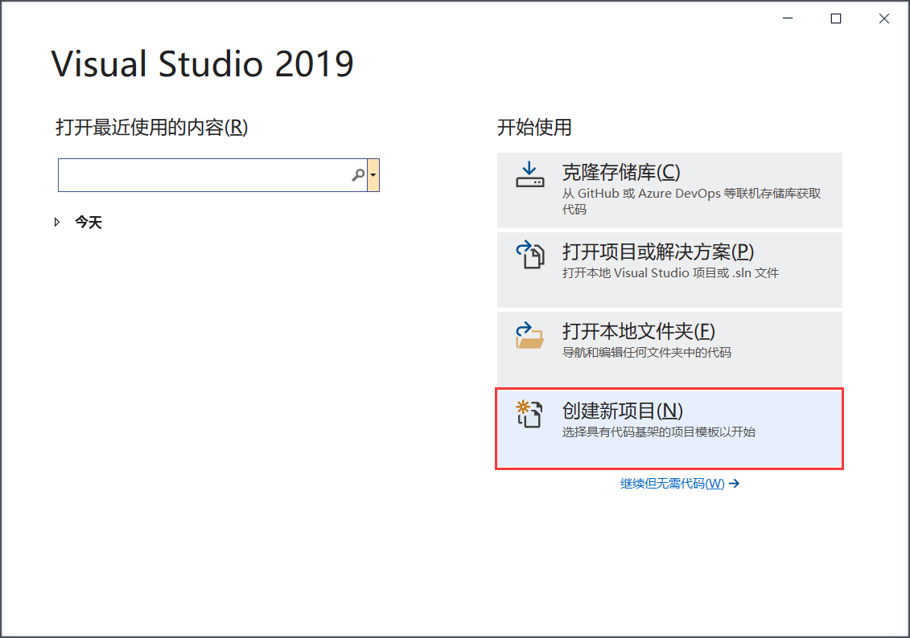
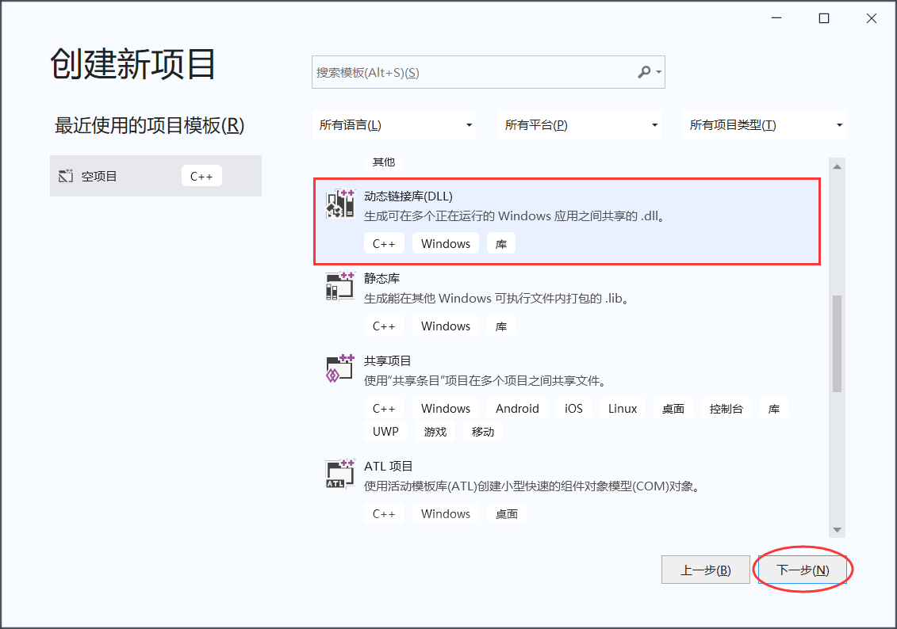
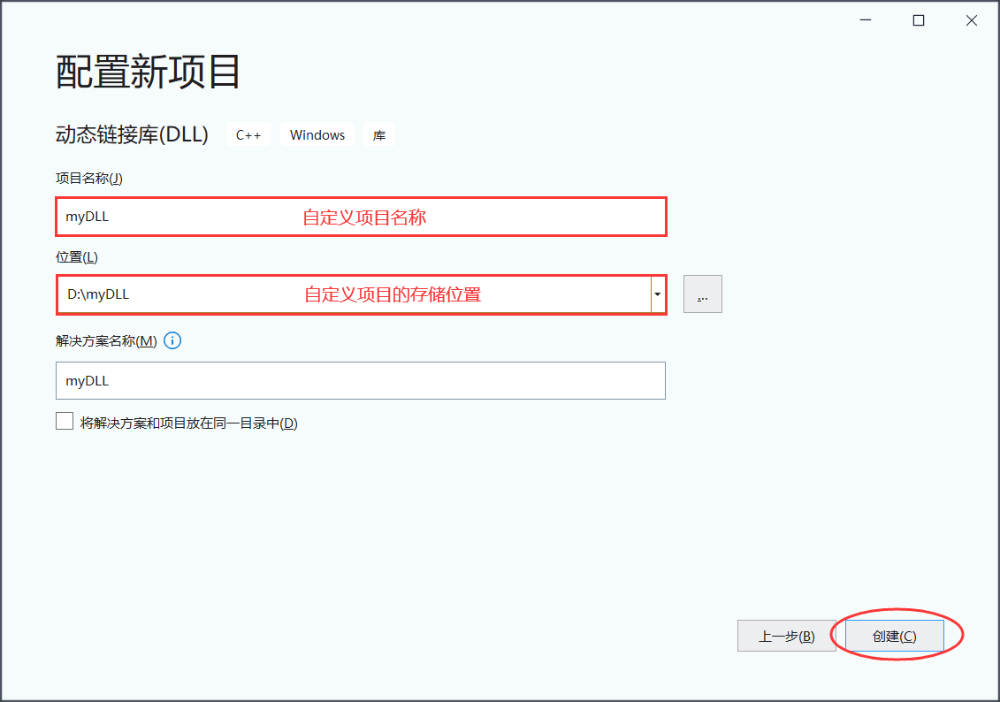
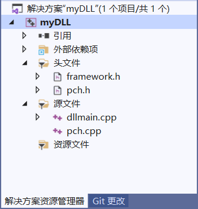
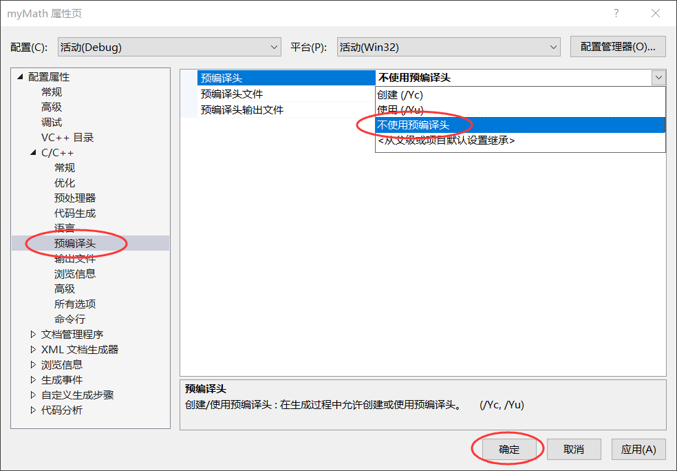
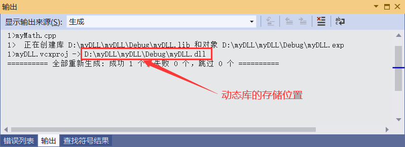
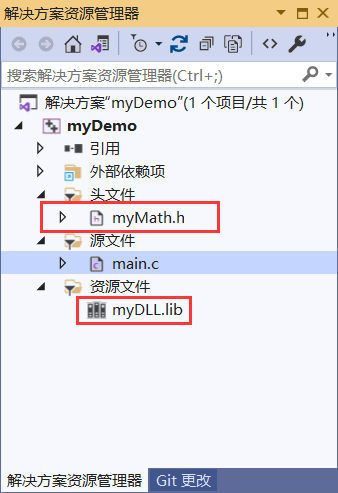

Windows下动态链接库的创建和使用
前面章节，我们介绍了如何在 Windows 和 Linux 平台上创建和使用静态链接库。本节将围绕动态链接库（Dynamic Link Library，简称 DLL），研究在 Windows 和 Linux 平台上创建和使用它的详细过程。
首先，我们了解一下 Windows 上是如何创建和使用动态链接库的。
我们知道，.lib 是静态库文件的后缀名，虽然引入库文件的后缀名也是 .lib，但两者有着本质上的区别。引入库文件和动态链接库搭配使用，动态链接库负责存储定义好的函数和变量，引入库负责记录动态库中哪些函数和变量允许被外界调用，记录的信息包含函数和变量的名称以及它们在动态库中的存储位置。
引入库文件的作用是“告诉”静态链接器哪些函数或者变量的定义位于动态库中，将这些函数和变量的链接工作向后推迟，等到程序执行时再进行（由动态链接库完成）。
那么，到底怎样生成引入库文件和动态库文件呢？接下来我们用 VS2019 将前面章节中的 myMath.c 库文件转换为动态链接库，整个过程分为以下几步：
1) 创建一个动态链接库的项目，打开 VS 2019，选择“创建新项目”：
弹出的对话框中，选择创建“动态链接库（DLL）”项目，然后点击“下一步”：
在图 3 所示的对话框中，自定义项目名称和存储位置，其它选项保持默认即可：
点击“创建”按钮后，动态链接库的项目就创建完成了，初始状态下的项目如图 4 所示：
2) 图 4 中所示的这些文件，是 VS 默认生成的，其中最重要的是 dllmain.cpp 文件，包含以下内容：
DllMain() 函数中，hModule 表示本 DLL 程序的句柄，ul_reasion_for_call 用于指定动态链接库被调用的原因，lpReserved 是一个保留参数，目前很少使用。
ul_reasion_for_cal 参数的值有 4 种，代表了 4 种调用 DLL 程序的场景，分别是：
3) 我们的初衷是将 myMath.c 库文件转换为动态链接库，图 4 中的这些文件可以全部删除。由于项目中没有使用 VS 提供的 pch.h 等文件，需要修改一下 VS 的设置，具体做法是：鼠标右击图 4 中的项目名，选择 "属性"，在图 5 所示的对话框中完成如下修改操作：
删除原有的所有文件后，在项目中添加 myMath.h 和 myMath.c 两个文件，它们各自包含的代码为：
注意在 Windows 平台上，动态链接库中的函数或者变量要想被外界调用，必须用 __declspec(dllexport) 修饰。myMath.h 头文件中，我们分别用 __declspec(dllexport) 修饰了 4 个函数，最终生成的动态链接库就提供有 4 个函数供其它程序调用。
我们可以轻松找到生成的动态链接库的存储位置，此外在同路径下还生成了一个名为 myDLL.lib 的文件，这就是引入库文件。
首先，分享动态链接库时需要准备 3 个文件，一个是动态链接库的头文件，方便用户了解动态链接库有哪些功能可以用，还有就是动态链接库文件和引入库文件。分享头文件之前，我们还需要将其内部的所有 __declspec(dllexport) 改为 __declspec(dllimport)，经过修改后的头文件才能被用户使用。
将 myDLL.dll 载入到 MyDemo 项目的过程分为以下几步：
1) 将修改过的 myMath.h 以及 myDLL.lib 和 myDLL.dll 文件拷贝至 MyDemo 项目中，MyDemo 项目的存储位置可以通过 "右击资源管理器中的项目名 -> 在资源管理器中打开文件夹" 找到。
2) 将 myMath.h 头文件和 myDLL.lib 引入到 myDemo 项目中，引入后的 MyDemo 如图 7 所示：
3) main.c 文件中添加
首先，我们了解一下 Windows 上是如何创建和使用动态链接库的。
动态链接库的创建
Windows 平台上，创建动态链接库文件（.dll）的同时还必须生成一个引入库文件（.lib）。我们知道，.lib 是静态库文件的后缀名，虽然引入库文件的后缀名也是 .lib，但两者有着本质上的区别。引入库文件和动态链接库搭配使用，动态链接库负责存储定义好的函数和变量，引入库负责记录动态库中哪些函数和变量允许被外界调用，记录的信息包含函数和变量的名称以及它们在动态库中的存储位置。
引入库文件的作用是“告诉”静态链接器哪些函数或者变量的定义位于动态库中，将这些函数和变量的链接工作向后推迟，等到程序执行时再进行（由动态链接库完成）。
那么，到底怎样生成引入库文件和动态库文件呢？接下来我们用 VS2019 将前面章节中的 myMath.c 库文件转换为动态链接库，整个过程分为以下几步：
1) 创建一个动态链接库的项目，打开 VS 2019，选择“创建新项目”：

图 1 创建新项目
图 1 创建新项目
弹出的对话框中，选择创建“动态链接库（DLL）”项目，然后点击“下一步”：

图 2 创建动态链接库项目
图 2 创建动态链接库项目
在图 3 所示的对话框中，自定义项目名称和存储位置，其它选项保持默认即可：

图 3 自定义项目的名称和存储位置
图 3 自定义项目的名称和存储位置
点击“创建”按钮后，动态链接库的项目就创建完成了，初始状态下的项目如图 4 所示：

图 4 创建好的动态链接库项目
图 4 创建好的动态链接库项目
2) 图 4 中所示的这些文件，是 VS 默认生成的，其中最重要的是 dllmain.cpp 文件，包含以下内容：
BOOL APIENTRY DllMain( HMODULE hModule,
DWORD ul_reason_for_call,
LPVOID lpReserved
)
{
switch (ul_reason_for_call)
{
case DLL_PROCESS_ATTACH:
case DLL_THREAD_ATTACH:
case DLL_THREAD_DETACH:
case DLL_PROCESS_DETACH:
break;
}
return TRUE;
}
如同 DOS 程序需要 main() 作为入口函数一样，Windows 系统加载动态链接库时也需要一个入口函数，DllMain() 函数就是动态链接库的入口函数。有些动态链接库文件中没有提供 DllMain() 函数也可以正常载入，因为系统会引入一个默认的、不具有任何操作的 DllMain() 函数。DllMain() 函数中，hModule 表示本 DLL 程序的句柄，ul_reasion_for_call 用于指定动态链接库被调用的原因，lpReserved 是一个保留参数，目前很少使用。
ul_reasion_for_cal 参数的值有 4 种，代表了 4 种调用 DLL 程序的场景，分别是：
- DLL_PROCESS_ATTACH：当一个程序调用 DLL 中的函数时，会将 DLL 程序载入内存，系统会调用 DLL 程序的 DllMain() 函数，传递给 ul_reasion_for_cal 参数的值为 DLL_PROCESS_ATTACH。注意，只有 DLL 程序第一次载入内存时 ul_reasion_for_cal 参数的值是 DLL_PROCESS_ATTACH；
- DLL_THREAD_ATTACH：每当调用 DLL 程序的进程中创建一个线程时，系统都会调用 DLL 程序的 DllMain() 函数，并将 DLL_THREAD_ATTACH 传递给 ul_reasion_for_cal 参数；
- DLL_THREAD_DETACH：当调用 DLL 程序的进程中有线程正常执行终止，而非其他线程强制其终止时，系统会调用 DllMain() 函数，并将 DLL_THREAD_DETACH 传递给 ul_reasion_for_cal 参数；
- DLL_PROCESS_DETACH：将 DLL 程序被释放，或者调用 DLL 程序的程序执行结束后，系统会调用 DllMain() 函数，并将 DLL_PROCESS_DETACH 传递给 ul_reasion_for_cal 参数。
3) 我们的初衷是将 myMath.c 库文件转换为动态链接库，图 4 中的这些文件可以全部删除。由于项目中没有使用 VS 提供的 pch.h 等文件，需要修改一下 VS 的设置，具体做法是：鼠标右击图 4 中的项目名，选择 "属性"，在图 5 所示的对话框中完成如下修改操作：

图 5 取消 "预编译头"设置
图 5 取消 "预编译头"设置
删除原有的所有文件后，在项目中添加 myMath.h 和 myMath.c 两个文件，它们各自包含的代码为：
- //myMath.h
- //实现两个整数相加，返回它们的和
- __declspec(dllexport) int add(int a, int b);
- //实现两个整数相减，返回它们的差
- __declspec(dllexport) int sub(int a, int b);
- //实现两个整数相乘，返回它们的乘积
- __declspec(dllexport) int mul(int a, int b);
- //实现两个整数相除，返回它们的商
- __declspec(dllexport) int div(int a, int b);
- //myMath.c
- #include "myMath.h"
- int add(int a, int b) {
- return a + b;
- }
- int sub(int a, int b) {
- return a - b;
- }
- int mul(int a, int b) {
- return a * b;
- }
- int div(int a, int b) {
- if (b != 0) {
- return a / b;
- }
- return -1;
- }
4) 鼠标右键点击图 4 所示的项目名 myMath，选择“重新生成”，如果 VS 的执行结果如图 6 所示，则表明成功生成动态链接库。除了用 __declspec(dllexport) 注明被外界调用的函数和变量外，还可以借助 .def 文件指明允许被外界调用的函数和变量，这里不再展开讲解，感兴趣的读者可自行查阅相关资料。

图 6 成功生成动态链接库
图 6 成功生成动态链接库
我们可以轻松找到生成的动态链接库的存储位置，此外在同路径下还生成了一个名为 myDLL.lib 的文件，这就是引入库文件。
动态链接库的使用
接下来，我们以刚刚生成的 myDLL.dll 动态链接库为例，教大家如何在自己的项目中使用他人分享的动态链接库。首先，分享动态链接库时需要准备 3 个文件，一个是动态链接库的头文件，方便用户了解动态链接库有哪些功能可以用，还有就是动态链接库文件和引入库文件。分享头文件之前，我们还需要将其内部的所有 __declspec(dllexport) 改为 __declspec(dllimport)，经过修改后的头文件才能被用户使用。
假设在 MyDemo 项目中使用 myDLL.dll 动态链接库，此项目只有一个 main.c 文件，包含的代码为：__declspec(dllexport) 和 __declspec(dllimport) 搭配使用，前者用于生成动态链接库时指明哪些函数和变量可以被外界调用，后者的作用是告知用户和编译器哪些函数和变量的定义位于动态链接库中。
- #include <stdio.h>
- int main() {
- int a = 3, b = 4;
- printf("a+b=%d\n", add(a, b));
- printf("a-b=%d\n", sub(a, b));
- printf("a*b=%d\n", mul(a, b));
- printf("a/b=%d", div(a, b));
- return 0;
- }
1) 将修改过的 myMath.h 以及 myDLL.lib 和 myDLL.dll 文件拷贝至 MyDemo 项目中，MyDemo 项目的存储位置可以通过 "右击资源管理器中的项目名 -> 在资源管理器中打开文件夹" 找到。
2) 将 myMath.h 头文件和 myDLL.lib 引入到 myDemo 项目中，引入后的 MyDemo 如图 7 所示：

图 7 引入动态链接库后的 MyDemo 项目
图 7 引入动态链接库后的 MyDemo 项目
3) main.c 文件中添加
#include "myMath.h"语句后，运行 MyDemo 项目，执行结果为：
a+b=7
a-b=-1
a*b=12
a/b=0
关注微信公众号「站长严长生」，在手机上阅读所有教程，随时随地都能学习。本公众号由C语言中文网站长运营，每日更新，坚持原创，敢说真话，凡事有态度。

微信扫描二维码关注公众号